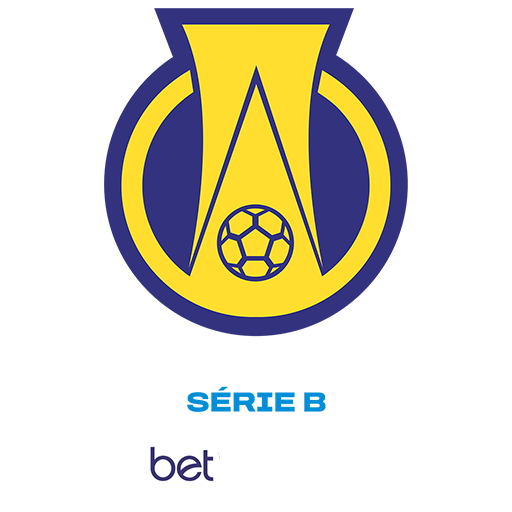
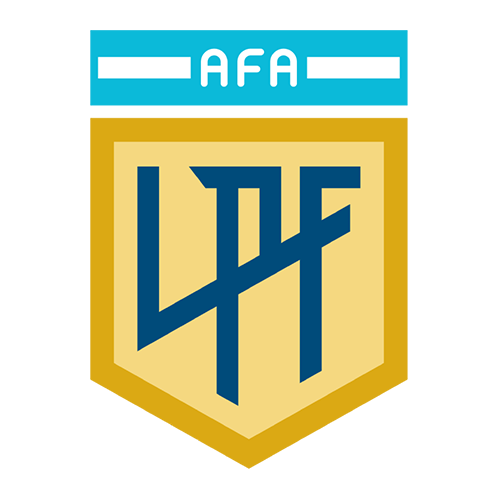
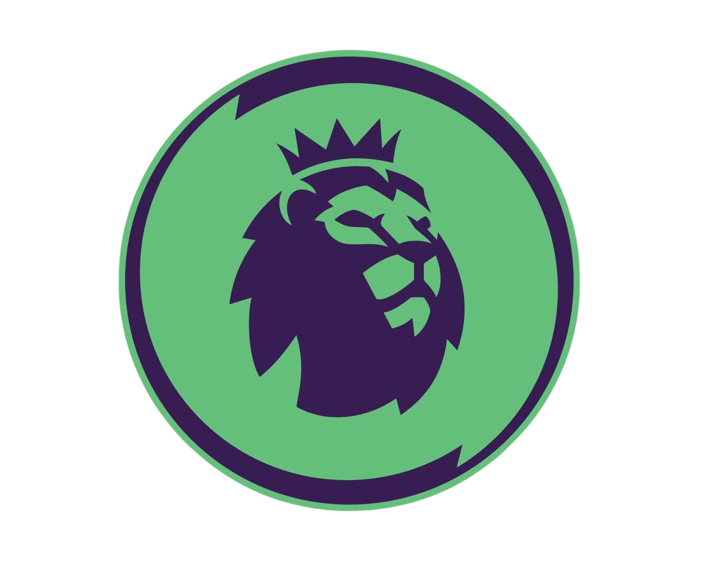
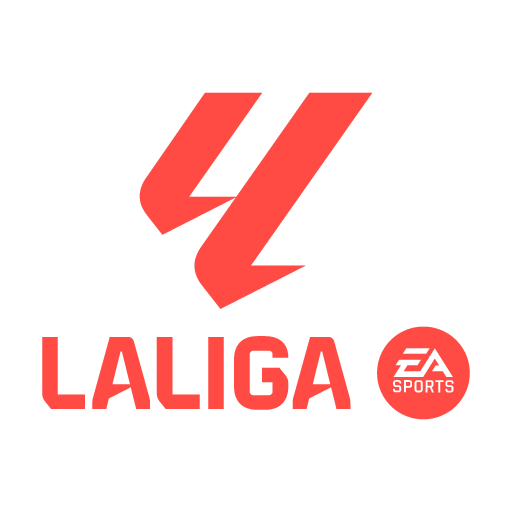
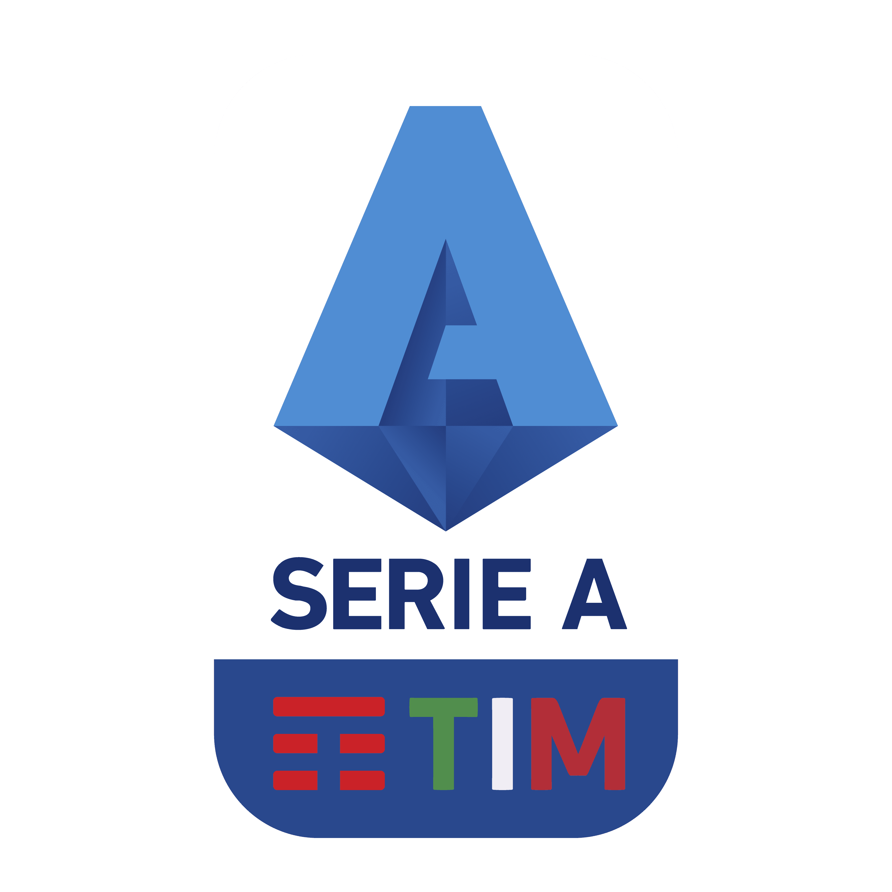

Escolha a Liga
Comece sua jornada selecionando um campeonato para gerenciar.
América do Sul
Brasil - Série A
Maior CampeãoPalmeiras (12)
Último CampeãoBotafogo
"É uma das ligas mais equilibradas do mundo, tendo tido 7 campeões diferentes nos últimos 10 anos."

Brasil - Série B
Maior CampeãoCoritiba (2)
Último CampeãoVitória
"Desde 2006, no formato de pontos corridos, mais de 15 clubes diferentes já foram campeões da Série B."

Liga Argentina
Maior CampeãoRiver Plate (38)
Último CampeãoPlatense
"O 'Superclásico' entre Boca e River é considerado por muitos o maior dérbi do futebol mundial."
Europa

Premier League
Maior CampeãoMan. United (20)
Último CampeãoMan. City
"Apenas um time na história da Premier League conseguiu ser campeão invicto: o Arsenal na temporada 2003-04."

La Liga
Maior CampeãoReal Madrid (36)
Último CampeãoBarcelona
"Lionel Messi é o maior artilheiro da história da La Liga, com mais de 470 gols, todos pelo Barcelona."

Serie A
Maior CampeãoJuventus (36)
Último CampeãoNapoli
"Milan e Inter de Milão juntos somam 10 títulos da Champions League, fazendo de Milão uma das cidades mais vitoriosas da Europa."